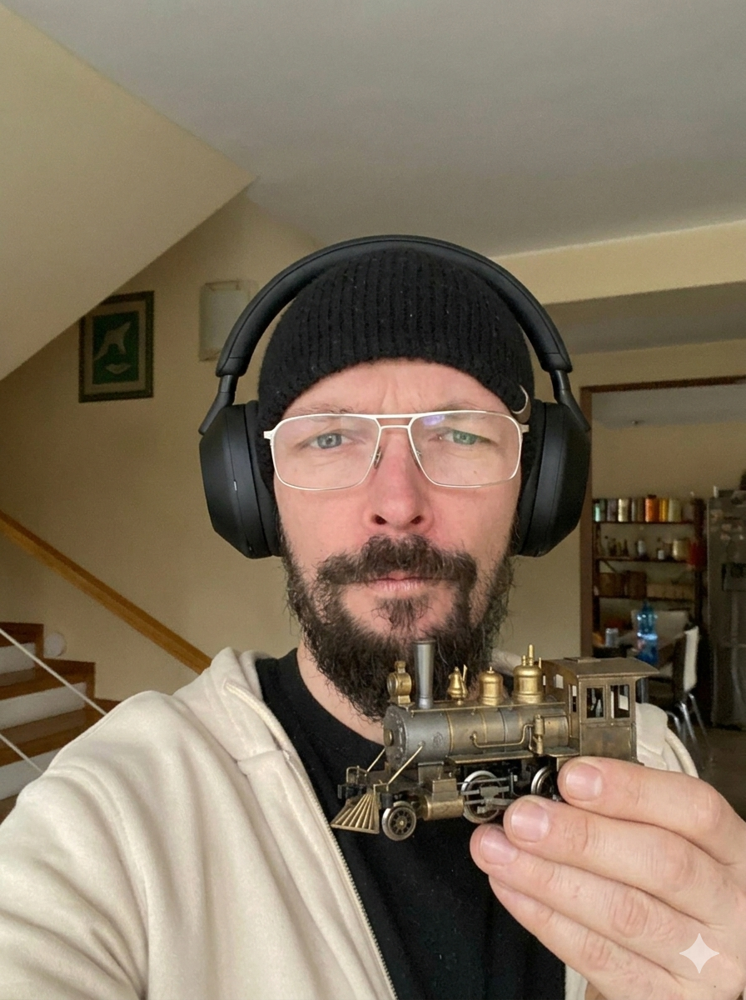

NEOFICIÁLNY DETEKTOR PIČOVÍN VOL. 01 / NONSTOP
ČO ROBÍ TOMÁŠ?
Nikto nevie. Ani on.
Nech rozhodne koleso.
0 % ROBOTA
↓ VEDECKY NEOVERENÉ ON TO VIE?12 možností. Nula zodpovednosti.
ON TO VIE?12 možností. Nula zodpovednosti.
ON TO VIE?● TOMÁŠ JE MOMENTÁLNE… TOMÁŠ.#000
VEŠTBA DŇApodozrivý č. 1TAK ČO ZASE
podozrivý č. 1TAK ČO ZASE
VYMÝŠĽA?
Stlač to veľké tlačidlo. Vesmír má odpoveď. Pravdepodobne úplne jebnutú.
MEDZITÝM
V TOMÁŠOVOM LORE ↘
V TOMÁŠOVOM LORE ↘
KLÁRAPríjemkyňa 483 reels denne.
zase volá?
JAKUBŽije mu v hlave. Bez nájmu.
bro 💀DÔKAZY O NIČNEROBENÍ (0)
- Zatiaľ čistý register. Podozrivé. Roztoč prvé kolo. ↗
Čo všetko môže tento človek robiť? 12 MOŽNOSTÍ +
Každá možnosť má rovnakú šancu. Toto je meme, nie sledovanie Tomáša v reálnom čase.